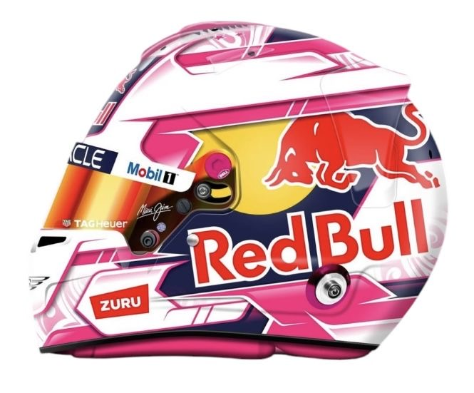
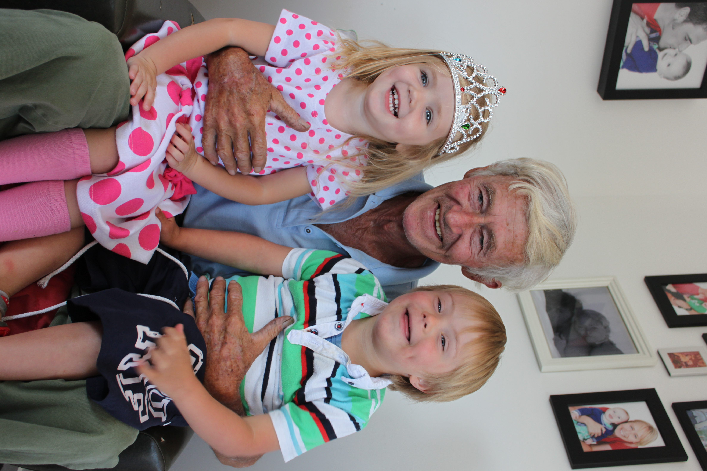

Acknowledgements!
I would like to acknowledge the official Formula 1 website as the source of the images used on my interests page. The photographs of the Formula 1 cars, drivers and races have all been taken from the official F1 website. These images have helped make my website more interesting and have allowed me to include pictures that relate to one of my main interests. I appreciate the photographers and Formula 1 for making these images available online. All images remain the property of their original owners, and credit is given to Formula 1 as the source.
-------------------------------------------------------------------------------------------------------------------------------------------



These are the images i got from the official F1 website
--------------------------------------------------------------------------------------------------------------
I would also like to acknowledge my Granddad, who sadly passed away. Although he is no longer with us, he will always hold a special place in my life and will never be forgotten. I am grateful for the memories I have of him and the time we were able to share together. Even though I cannot make any more memories with him, the ones I have will always mean a lot to me. I wanted to include him in my website because he is an important part of my family and will always be remembered.

---------------------------------------------------------------------------------------------------------------------------------------------